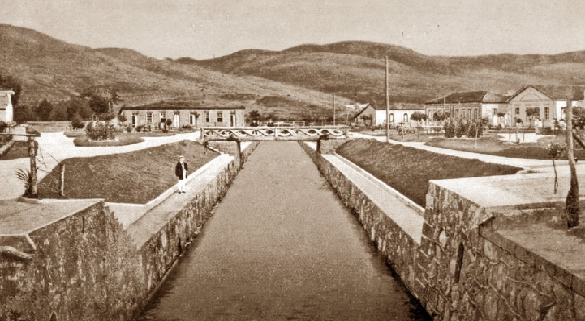

<!DOCTYPE html>
<html lang="pt-br">
<head>
    <meta charset="UTF-8">
    <title>Poços de Caldas | História </title>
    <link rel= "stylesheet" type="text/css" href="formatacao.css"> 
</html>
</head>

<body>

    <div class="menu">

        <a href="index.html">
            <h1 class="meio">
                Poços de Caldas
            </h1>
        </a>
    
        <div id="nav">
            <ul>
                <li> <a href="Historia.html"> História </a> </li>
                <li> <a href="Cassinos.html"> Cassinos</a> </li>
                <li> <a href="PontosTuristicos.html"> Pontos Turísticos </a></li>
                <li> <a href="Industrias.html"> Indústrias</a> </li>
                <li> <a href="Geografia.html"> Geografia</a> </li>
                <li> <a href="Eventos.html"> Eventos</a> </li>
                <li> <a href="Curiosidades.html"> Curiosidades </a></li>
                <li> <a href="Fotos.html"> Fotos</a></li>
            </ul>
       </div>

    </div>


    <div class="container" >

    <h1> História </h1>

    
    <h3>

        <p>
        A história sobre Poços de Caldas começou no século XVII, graças as suas primeiras fontes e nascentes encontradas 
        às bordas de uma caldera vulcânica desde 85 milhões de anos atrás que brotava a uma temperatura de 45 graus, onde 
        hoje é conhecida como Praça dos Macacos.
        As águas raras e com poder de cura foram responsáveis pela prosperidade da cidade quando as terras começaram a ser 
        ocupadas por ex-garimpeiros, que passaram a se dedicar à criação de gado por conta do declínio da atividade aurífera 
        na região das minas.
        <br>
        <br>
     
        <center>
            
         
        </center>


        </p>

        <p>
        Desde 1818, a região pertencia ao capitão José Bernardes Junqueira, que após falecer passou a pertencer ao seu 
        sobrinho, Pedro Junqueira. Entretanto o Senador Joaquim Floriano Godoy declarou de utilidade pública os terrenos 
        junto aos poços de água sulfurosa, e determinou também a desapropriação do local. Um expediente que acabou se 
        mostrando desnecessário, porque o próprio capitão se encarregou de doar 96 hectares de suas terras para a fundação
        do município. O ato foi assinado no dia 6 de novembro de 1872, data em que se comemora o aniversário de Poços de 
        Caldas.
        </p>

        <p>
        Desde 1886 funcionava na cidade uma casa de banho, utilizada para tratamento de doenças cutâneas através da água 
        sulfurosa e termal da Fonte dos Macacos. Em 1889 foi fundado, por Pedro Sanches, outro estabelecimento para o 
        mesmo fim, captando água da Fonte Pedro Botelho. Ali, a água sulfurosa subia até os depósitos por pressão natural.
        </p>
       
    
        <p>
        Em outubro de 1886, Poços recebeu o Imperador Dom Pedro 2º. Ele veio acompanhado da imperatriz Tereza Cristina, 
        para a inauguração de um ramal da Estrada de Ferro Mogiana.
        Três anos depois, a cidade foi desmembrada do distrito de Caldas e elevada à categoria de vila e município. 
        Seu nome tem relação com a história da família real portuguesa. Na época em que foram descobertos os poços de 
        água sulfurosa e térmica, a cidade de Caldas da Rainha, em Portugal, já era uma importante terma utilizada para 
        tratamentos e muito frequentada pela família real.  Caldas
        possui o mais antigo hospital termal em funcionamento no mundo, desde o século 16. Como as fontes eram poços 
        utilizados por animais, veio o nome Poços de Caldas.
        </p>
         
        <p> 
        Em 1931, foram construídas as Thermas Antônio Carlos, um dos mais belos prédios da cidade. O balneário passou a oferecer 
        uma série de serviços e tratamentos corporais a partir do uso da água termal, até então inexistentes no Brasil.
        Na década de 40, a prosperidade e o luxo tiveram seu grande momento em Poços de Caldas enquanto o jogo esteve liberado 
        no Brasil. O presidente Getúlio Vargas tinha uma suíte especial no hotel, com a mesma decoração da que ele usava no 
        Palácio do Catete, no Rio de Janeiro, então capital do país. O quarto ainda hoje preserva os móveis e o estilo da época. 
        Mas uma das maiores atrações do hotel continua sendo sua piscina térmica, construída num suntuoso salão sustentado por 
        colunas de mármore de carrara.
        </p>
       
    
        <p>
        Entre os artistas que passaram pelo Palace Casino naquela época áurea estiveram Sílvio Caldas, Carmem Miranda, 
        Orlando Silva e Carlos Galhardo. Estiveram também em Poços de Caldas personagens ilustres como Rui Barbosa, 
        Santos Dumont, o poeta Olavo Bilac e o romancista João do Rio. Entre os políticos, o interventor de Minas Gerais 
        durante o Estado Novo, Benedito Valadares, e o presidente Juscelino Kubitschek, entre outros, foram também presenças
        constantes.
        </p>
       
        <p>
        A proibição do jogo, em 1946, e a descoberta do antibiótico tiveram forte impacto para o turismo na cidade. O termalismo 
        deixou de ser a maneira mais eficaz de tratar as doenças para as quais era indicado. E os cassinos foram fechados. 
        A economia de Poços sofreu um grande abalo, mas a fase ruim foi superada com a mudança de foco no turismo. A classe
        média e grandes grupos passaram a frequentar as termas, a visitar as fontes e outros pontos de atração da cidade. 
        Além disso, a cidade abrigou várias indústrias, impulsionando a economia.
        </p>
     
        <p>  
        Em 2006, a cidade foi tema de enredo de Carnaval da escola de samba carioca Beija-Flor de Nilópolis. 
        Hoje, Poços de Caldas possui um dos melhores IDHs (Índice de Desenvolvimento Humano) do Estado e um fluxo maciço 
        de turistas. Seu novo Distrito Industrial vem atraindo empresas multinacionais para a cidade. O investimento também 
        é dirigido ao empresariado local, que conta com programa de incentivo da Prefeitura.
        A agricultura também é ponto forte do município, com destaque para os cafés especiais. O projeto Cafés Vulcânicos 
        pretende criar uma identidade regional para diversos produtos, iniciando pelo café de alta qualidade produzido em
        solo vulcânico.
        Em maio de 2017, Poços de Caldas passou a pertencer à Associação Europeia Termal e Histórica 
        (European Historic Thermal Towns Association), após assinatura de termo de adesão, em Caldas da Rainha (Portugal), 
        tornando-se cidade fora da Europa a integrar o roteiro, formado por importantes balneários europeus.
        </p>
    
    </h3>
    </div>


</body>


